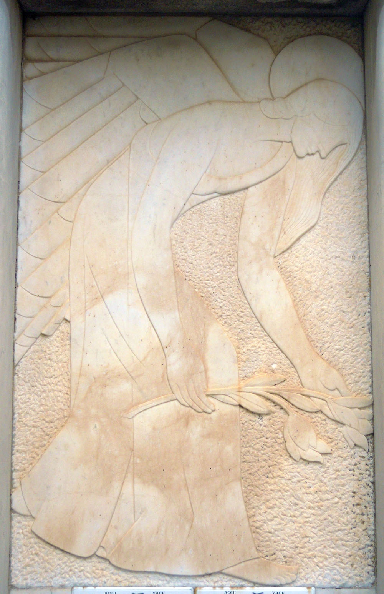

El industrial confitero Ángel Oliván Oliván (1878-1949) tuvo la suerte de ser agraciado con 3.000.000 pesetas en la lotería de Navidad de 1932. Hombre generoso, costeó un pabellón en el Asilo de los Ancianos Desamparados, aportó fondos para el Hospital Municipal de la Avenida de Numancia, el Instituto y un Grupo Escolar, reparó la carretera de Murillo y algunas calles de Calahorra, apoyó económicamente la investigación del historiador carmelita Lucas San Juan de la Cruz y cubrió los regadíos de Melero[1].
Dada su estrecha relación con Agapito del Valle[2], es muy posible que este arquitecto logroñés proyectara el panteón de Ángel Oliván en el cementerio de La Planilla, sepultura para la que se solicitó terreno y permiso de obras el 4 de diciembre de 1935[3]. Es una sepultura racionalista de grandes dimensiones, sobre basamento escalonado de granito. Sobre este basamento aparece una losa lisa de cubierta a dos aguas muy poco pendientes. A ambos lados se desarrolla un pequeño jardín. El acceso a la cripta se realiza a través de una losa en el suelo, con las letras RIP en relieve. La sepultura está cerrada en la zona de los pies con pilas cuadrangulares de granito unidas por barras de piedra de sección cuadrada. Sobre las pilas aparecen soportes para velas, de hierro, formadas por un tubo cilíndrico central y cuatro volutas móviles. En la parte central y a modo de puerta o acceso a la sepultura, aparece una cadena pequeña de eslabones ochavados.
La cabecera está concebida a modo de puerta. Es un gran vano adintelado flanqueado por tres medias columnas de mármol blanco a cada lado, más ancha la central y adosadas al muro, sin capitel. Las columnas soportan un gran dintel de granito, curvilíneo en la parte superior y coronado con cruz latina en relieve en el centro. A ambos lados de la puerta aparece un murete también de granito, que presenta una zona inferior lisa en la que aparecen los datos de los allí enterrados. La parte superior es curvilínea, repitiendo la línea del dintel y está decorada con las letras alfa (lado derecho de la sepultura) y omega (lado izquierdo) en relieve. El hueco de la puerta aparece cerrado con dos placas de mármol blanco. La inferior, más pequeña, presenta la inscripción “ANGEL OLIVAN Y FAMILIA” en relieve. La superior está ocupada por el bajorrelieve de un ángel (Figura 12), una figura masculina que viste exómide y está inclinada hacia adelante para depositar unos lirios sobre la tumba. Lleva el pelo largo y ondulado y está nimbado. Es una talla de gran calidad y delicadeza, especialmente apreciable en las manos y cabello, facetada y casi geométrica en el estudio de las alas, con un tratamiento de los paños casi inexistente por el escaso resalte del relieve. Es una sepultura de extraordinario interés por su posible atribución a Agapito del Valle y por la escasez de representaciones escultóricas funerarias en este periodo.

[1] AMC. Cod. 2.1.4.13. Sig. 441/3 (padrón de 1892), fol.31; Sig. 443/1 (padrón de 1907), fol. 27. Libro de Actas municipales. Del 15 de abril de 1931 al 10 de marzo de 1933. Sig. 148/2, fol. 235 y 241. Libro de Actas municipales. Del 15 de marzo de 1933 al 13 de febrero de 1935. Sig. 148/3, fol. 2, 20v. ABC, 23 de diciembre de 1932, p. 20. ABC (Sevilla), 27 de diciembre de 1932, p. 13. MARTÍNEZ SAN CELEDONIO, F.M. El Gran Libro de Calahorra, pp. 149-150.
[2] La primera obra de Agapito del Valle en Calahorra fue la reforma de la vivienda de Ángel Oliván (actual Museo de la Romanización, C/ Ángel Oliván) en 1933-1934 y, a partir de ese momento y hasta 1947 realizó diversas obras como el Hospital de la Avenida de Numancia, el Cuartel de la Guardia Civil, la parroquia de los Santos Mártires, casas para labradores y numerosos proyectos de arquitectura civil. También se encargó del proyecto de ensanche de la ciudad (1936-1937). En calidad de Arquitecto Municipal de Calahorra (1937-1940) fue el encargado de elaborar el primer proyecto de construcción de nichos para el cementerio de La Planilla, fechado en Logroño en mayo de 1938. AMC. Cod. 2.7.4.7. Sig. 1456/13 y 88/8; cod. 2.7.4.5. Sig. 817/7. Libro de Actas municipales. Del 15 de marzo de 1933 al 13 de febrero de 1935. Sig. 148/3, fol. 180v (18 de enero de 1934). Libro de Actas municipales. Del 13 de marzo de 1935 al 19 de junio de 1936. Sig. 149/1, fols. 28v (3 de abril de 1935). Libro de Actas Municipales. Del 28 de julio de 1936 al 30 de abril de 1937. Sig. 149/3, fols. 22v, 27, 60, 61-62v (nombramiento de arquitecto municipal), 67, 80, 89v, 94. Libro de Actas municipales. Del 5 de mayo de 1937 al 4 de febrero de 1938. Sig. 149/4, fol. 51. Libro de Actas municipales. Del 8 de mayo de 1940 al 22 de agosto de 1941. Sig. 150/1, fol. 73 (renuncia de Agapito del Valle como arquitecto municipal; 2 de noviembre de 1940). MATEOS GIL, A.J. “Arquitectura doméstica del primer tercio del siglo XX”, pp. 207, 210, 233-235. El proyecto de ensanche de la ciudad fue encargado el 12 de septiembre de 1936 y estaba realizado el 8 de enero de 1937. La obra de ensanche, alcantarillado y abastecimiento de agua potable fue costeada por Ángel Olivan. Cod. 1.2.2.1. Sig. 88/8. Agapito del Valle se encargó también de la supervisión de las obras de construcción de nichos en el cementerio. AMC. Cod. 2.7.3.5. Sig. 768/5. Cod. 2.1.3.1. Sig. 349/14.
[3] AMC. Libro de Actas municipales. Del 13 de marzo de 1935 al 19 de junio de 1936. Sig. 149/1, fol. 125.